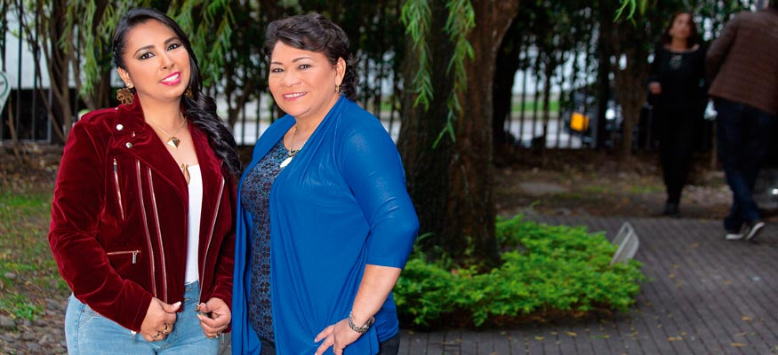

Dora Rueda
 @patriciateheranyomellamo
@patriciateheranyomellamo
 Yo Me Llamo Patricia Teherán 2017
Yo Me Llamo Patricia Teherán 2017
 Dora Rueda Yo Me Llamo Patricia Teherán
Dora Rueda Yo Me Llamo Patricia Teherán
“A nuestros seguidores solo nos queda darles las gracias por tanto, su apoyo y confianza nos motivan para continuar entregando lo mejor del vallenato femenino”
Después de su participación en el reality Yo Me Llamo, esta artista quiere iniciar su carrera y demostrar que las mujeres son excelentes intérpretes del género vallenato.
Dora viene de una familia musical, aprendió a tocar la guitarra de la mano de su padre, apenas tuvo la oportunidad de dar sus primeros pasos en la música viajó a Medellín donde se desempeñó como corista de diferentes artistas del género vallenato durante varios años, hasta que el año pasado tuvo la oportunidad de mostrar su talento en el reality Yo Me Llamo donde interpretó a una mujer que admira y respeta, la fallecida Patricia Teherán. Ahora quiere mostrar todo su talento acompañada de Maribel Cortina, quien fue acordeonera original de la agrupación -Las Diosas del Vallenato-.
Maribel Cortina toca el acordeón desde que tenía 7 años, fue parte de una agrupación que se componía solo por hombres y ella, luego fue contactada por Patricia Teherán para ser parte de su agrupación; el cambio fue importante para su carrera, una experiencia que asegura no cambiaría por nada en el mundo.
- 
Los artistas del género vallenato que más admiran estas dos talentosas mujeres son Nicolás Elías Mendoza Daza conocido como “Colacho” Mendoza”, quien fue acordeonero de Rafael Orozco Maestre, de la nueva ola Silvestre Dangond.
Conocida como “La Nueva Diosa del Vallenato” Dora considera que es un gran compromiso y alago, desde muy pequeña admiraba a Las Diosas del Vallenato, nunca imaginó que tendría la oportunidad de representar a Patricia y mucho menos estar junto a la verdadera acordeonera, por lo que su trabajo asegura, es continuar con su legado y entregar música nueva junto a Maribel para todos aquellos seguidores que aman el vallenato hecho por mujeres.
{kind=link}
{kind=link}
“Renace una voz”, es el primer álbum de Dora como solista, de ahí se desprende el sencillo -Se fue de mi- composición de Mario Pérez, este álbum fue producido por Rafael Machacón en la ciudad de Medellín y cuenta con un video que fue dirigido y producido por 3P Studios, con la participación de Maribel Cortina, Juan Fernando, Julieth Castrillón, varios extras, amigos y seguidores.
“Con tan solo año y medio de unión musical estas dos artistas ya se entienden y se complementan de tal forma que solo el éxito es lo que ven en su camino”
Lo que viene es trabajo, estarán presentándose en varias ciudades del país, para luego iniciar una gira por Estados Unidos, no se pierdan nada acerca de estas dos mujeres que buscan continuar con un legado, los invitamos a que sigan la carrera musical de esta artista la cual quiere llevar el vallenato femenino por todo lo alto, mostrando algo nuevo en el género y manteniendo ese estilo único que sus seguidores quieren escuchar.